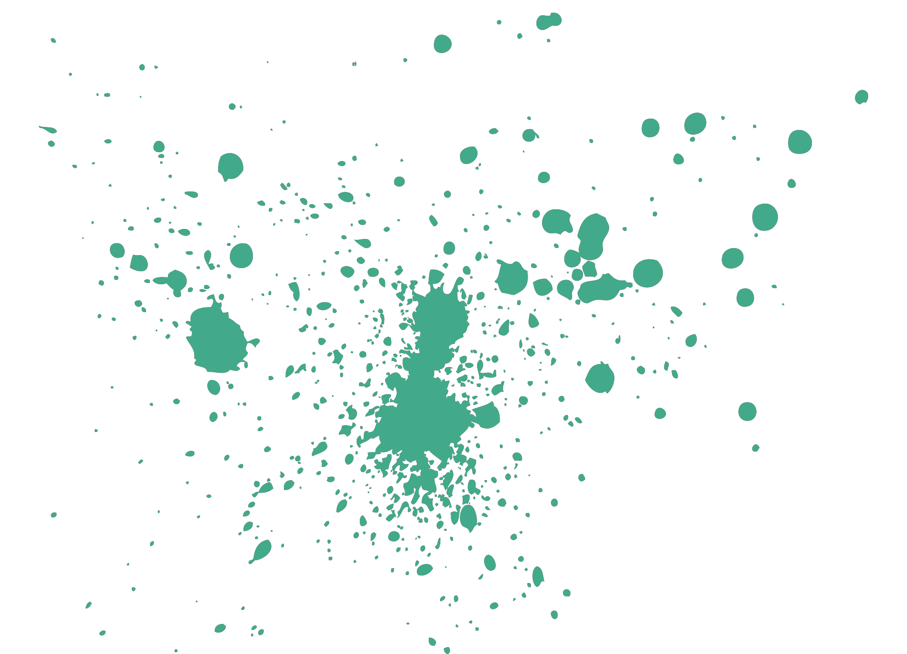
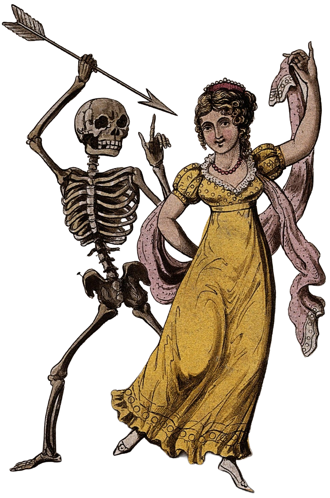
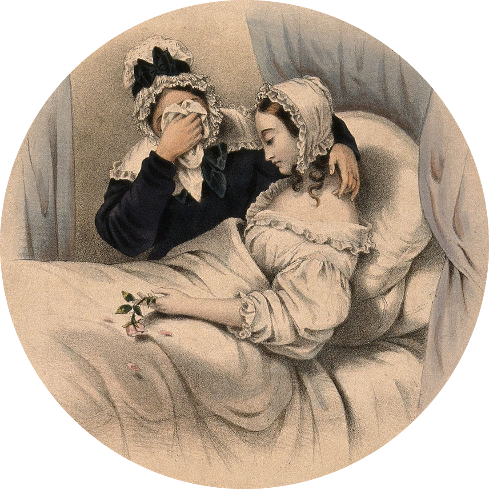
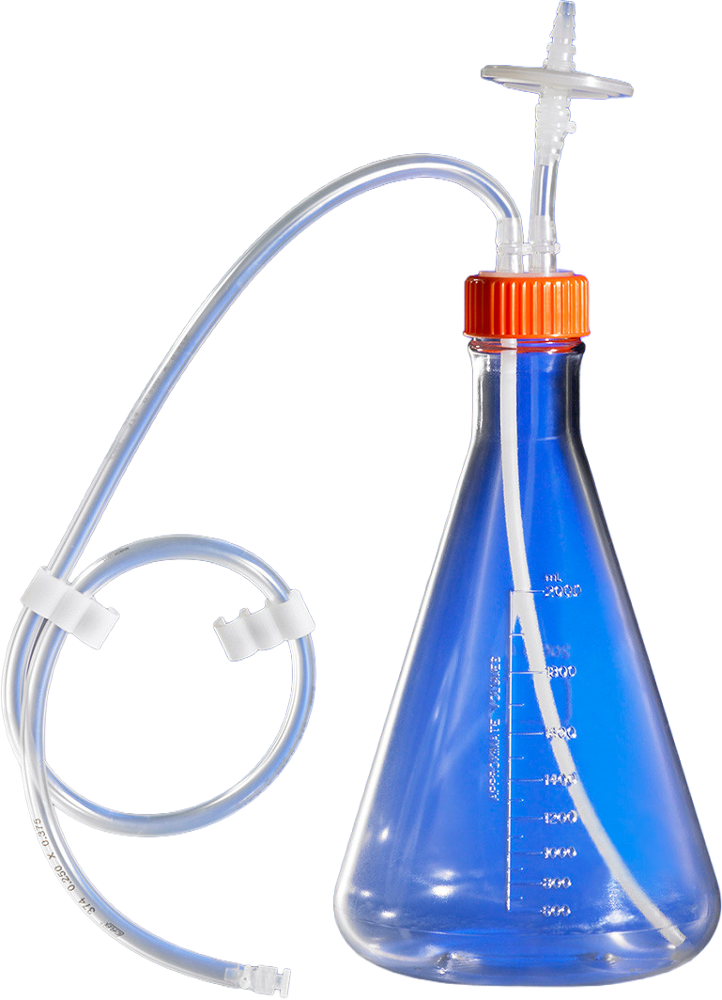

18~19세기 낭만주의 유럽에선 결핵으로 서서히 죽어가는 게 동경의 대상이 되었죠. 쇼팽이나 키츠 같은 천재들의 비극적 죽음이 이어지며 대중은 이 병이 가진 기묘한 매력에 완전히 매료되었습니다.

만성적인 미열은 환자의 눈을 보석처럼 반짝이게 만들었고 창백한 피부 위에 뺨과 입술을 오히려 붉게 물들였습니다. 체중이 감소하며 생기는 가녀린 실루엣까지 당대의 이상과 맞아떨어지자 병약함은 찬란한 예술적 황홀경이 되었습니다.
여성들은 환자들의 얇은 허리를 모방하기 위해 코르셋을 단단히 조였고 하얀 피부와 대비되는 붉은 뺨을 연출하려 수은과 아편으로 화장했습니다. 예술 속 비련의 여주인공들처럼 가냘픈 나약함이 대중문화의 여성상이던 시대였습니다.
빈민가에선 열악한 위생과 빈곤을 고발하는 참혹한 지표였지만 브론테 자매처럼 부유층과 예술가에겐 거대한 문학적 메타포가 되었습니다. 결핵은 단순한 아픔을 넘어 사회 전체의 문화와 유행을 뒤흔드는 가장 극적인 서사였죠.

코흐와 파스퇴르 같은 과학자들이 결핵의 원인이 고결한 영혼이 아닌 박테리아라는 사실을 밝혀내며 이 기괴한 유행은 막을 내렸습니다. 낭만의 가면이 벗겨지고 참혹한 전염병의 얼굴이 드러나자 인류는 비로소 질병을 미화하는 일을 멈추었죠.